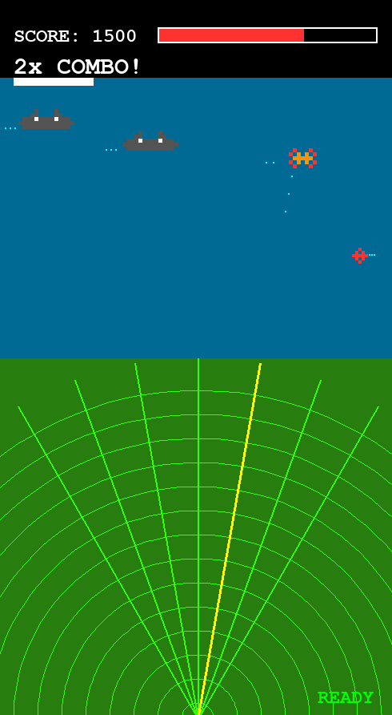

Warship
A retro-style modular arcade shooter built with Python and the Pygame library.

The Concept
Warship is a fast-paced, retro-inspired arcade experience that puts modular gameplay mechanics at its core. Drawing on the visual language of classic 80s shooters, the game challenges players with escalating enemy formations and tight, responsive controls — all driven by a clean, well-structured game loop that keeps every frame crisp and every collision satisfying. The goal was simple: build something that feels like an arcade cabinet in your browser, with none of the jank.
Core Features
- Modular enemy systems with dynamic spawning patterns and scaling difficulty curves.
- Custom collision detection and lightweight 2D physics for precise, responsive gameplay.
- Full asset pipeline using Pygame — sprite management, layered rendering, and real-time state tracking.
Technical Implementation
The entire game is written in Python, leveraging Pygame's event loop as the backbone for all core logic — input handling, entity updates, and rendering. Careful attention was paid to frame rate optimisation: delta-time calculations keep movement consistent across machines, while sprite groups and dirty-rect rendering reduce draw calls during the heaviest on-screen action. Memory is managed through disciplined object pooling for bullets and explosions, preventing garbage collection spikes from breaking the gameplay flow.